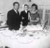

RÉCEPTION LORS DE LA PREMIÈRE COMMUNION DE GILLES DAOUST
Gilles Daoust a fait sa première communion au printemps 1962 à la paroisse St-Jean-Baptiste-de-Lasalle dans le quartier Maisonneuve de Montréal. Sa famille habitait le rez-de-chaussée en biais du 2179 Létourneux, la résidence d'Ézilda Côté-Consigny grand-mère maternelle de Gilles. C'est chez Ézilda sa grand-mère qu'eut lieu la réception suivant la cérémonie religieuse.
Cliquez sur les miniatures ci-dessous pour mieux voir les photos.